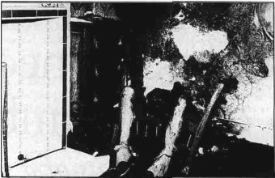

Wednesday, March the 9th, 2011
back to: title, date or indexes
Jessica Warner, in Craze : Gin And Debauchery In An Age Of Reason (2003) provides what she says is a complete list of victims of spontaneous human combustion in literature from 1798 to 1893.

The narrator's father in Wieland by Charles Brockden Brown (1798)
William the Testy in Knickerbocker's History Of New York by Washington Irving (1809)
A woman in Jacob Faithful by Captain Marryat (1834)
A blacksmith in Dead Souls by Nikolai Gogol (1842)
Sir Polloxfen Tremens in The Glenmutchkin Railway by William Edmondstoune Aytoun (1845)
The sailor Miguel Saveda in Redburn by Herman Melville (1849)
Mr Krook in Bleak House by Charles Dickens (1852–53)
The whisky-sodden and derelict Jimmy Flinn in Life On The Mississippi by Mark Twain (1883)
A character in Docteur Pascal by Emile Zola (1893)
The list does not include the female cook in Charlotte Brontë's Jane Eyre (1847), who was merely “in a frame of mind and body threatening spontaneous combustion”.
Hooting Yard on the Air, March the 17th, 2011 : “Knitted Bulgarian Folk Tale Puppet” (starts around 12:59)